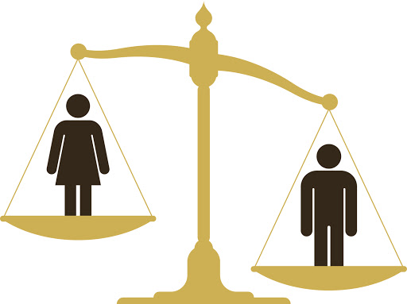

Gender Inequality

Gender inequality is the social process by which men and women are
not treated as equals. The treatment may arise from distinctions regarding
biology, psychology, or cultural norms. Some of these distinctions are
empirically-grounded while others appear to be socially constructed. Gender
inequality also affects non-binary people. Studies show the different
lived experiences of genders across many domains including education,
life expectancy, personality, interests, family life, careers,
and political affiliations. Gender inequality is experienced differently
across different cultures
Causes of Gender Inequality

Uneven access to education
Around the world, women still have less access to education than
men. ¼ of young women between 15-24 will not finish primary school.
That group makes up 58% of the people not completing that basic
education. Of all the illiterate people in the world, ⅔ are women.
When girls are not educated on the same level as boys, it has a huge
effect on their future and the kinds of opportunities they’ll get.
Job segregation
One of the causes for gender inequality within employment
is the division of jobs. In most societies, there’s an inherent
belief that men are simply better equipped to handle certain jobs.
Most of the time, those are the jobs that pay the best. This discrimination
results in lower income for women. Women also take on the primary
responsibility for unpaid labor, so even as they participate in the
paid workforce, they have extra work that never gets recognized financially.
Lack of legal protections
According to research from the World Bank, over one billion women don’t
have legal protection against domestic sexual violence or domestic economic
violence. Both have a significant impact on women’s ability to thrive and
live in freedom. In many countries, there’s also a lack of legal protections
against harassment in the workplace, at school, and in public. These places
become unsafe and without protection, women frequently have to make decisions
that compromise and limit their goals.
Poor medical care
In addition to limited access to contraception, women overall receive
lower-quality medical care than men. This is linked to other gender inequality
reasons such as a lack of education and job opportunities, which results
in more women being in poverty. They are less likely to be able to afford
good healthcare. There’s also been less research into diseases that affect
women more than men, such as autoimmune disorders and chronic pain conditions.
Many women also experience discrimination and dismissal from their doctors, broadening
the gender gap in healthcare quality.
Lack of religious freedom
When religious freedom is attacked, women suffer the most.
According to the World Economic Forum, when extremist ideologies
(such as ISIS) come into a community and restrict religious freedom,
gender inequality gets worse. In a study performed by Georgetown
University and Brigham Young University, researchers were also able
to connect religious intolerance with women’s ability to participate
in the economy. When there’s more religious freedom, an economy becomes
more stable thanks to women’s participation.
Lack of political representation
Of all national parliaments at the beginning of 2019, only 24.3% of seats
were filled by women. As of June of 2019, 11 Heads of State were women. Despite
progress in this area over the years, women are still grossly underrepresented
in government and the political process. This means that certain issues that
female politicians tend to bring up – such as parental leave and childcare,
pensions, gender equality laws and gender-based violence – are often neglected.